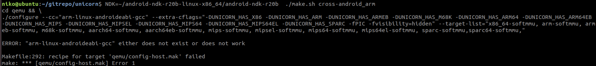
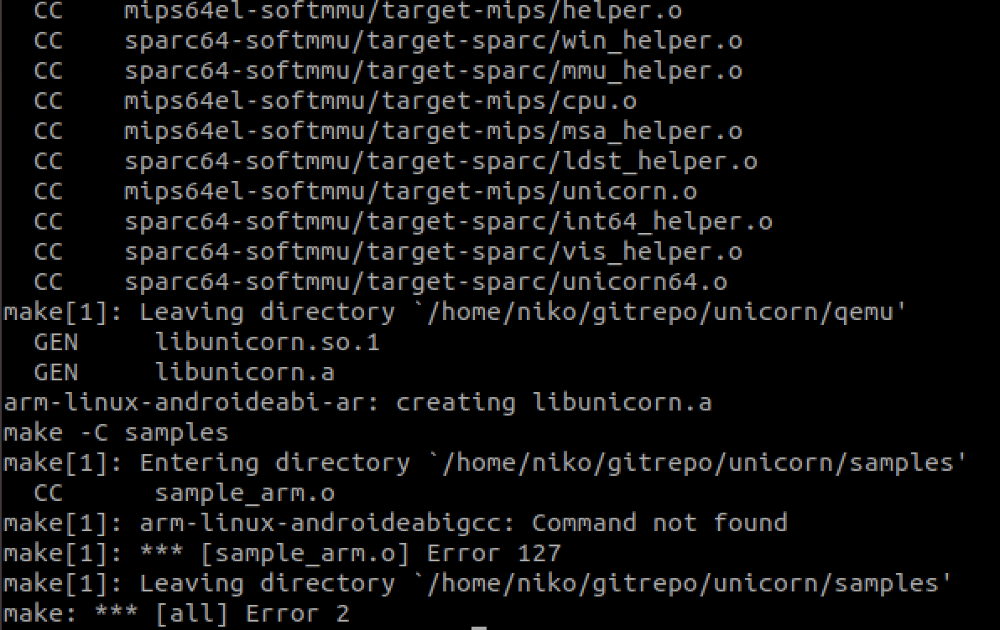
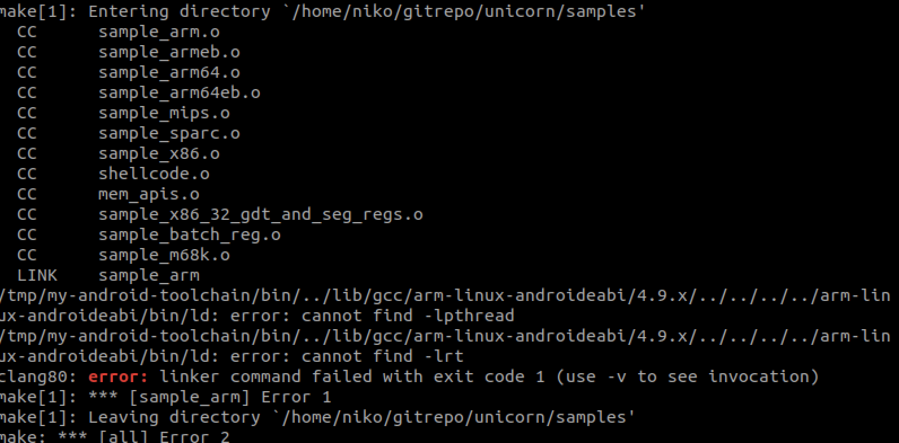

Unicorn Engine 目前已经支持 arm 和 arm64的编译，但我在实际编译的时候，按官网的编译命令并没有成功，遂记录一下问题排查过程。
在官网编译链接中写道：$ NDK=~/android/android-ndk-r20 ./make.sh cross-android_arm, 但我直接用了之后发现并没有成功，错误显示如下图：

显然是找不到gcc 的路径，因此，我尝试把ndk的路径加入到PATH中, 但仍然提示我找不到gcc， 后来我 find 了一下，发现ndk里已经没有gcc了，就采用了standalone tools 创建一个独立的编译工具链,
python3 make_standalone_toolchain.py –arch arm –api 21 –install-dir /tmp/my-android-toolchain
这个文件在build/tools 目录下。
接着将工具链中的bin目录加入到PATH环境变量中，此时的bin目录中已经包含了arm-linux-androideabi-gcc。 再次运行，发现此时已经能够正常编译出 libunicorn.so 和 libunicorn.a 文件了， 但是samples 目录的编译仍然失败了，

可以看到，图中的错误为arm-linux-androideabigcc: Command not found, 文件名并没有对上，需要修改samples 目录下的Makefile文件。
修改完后，继续运行，发现这个时候ld 报错，提示找不到lpthread 这个so。
搜了一下ndk，发现还真没有这个so。查了一下网上的解决方案就是把缺少的so补齐一下。到这里我就没有继续往下分析了，因为需要的unicorn库已经到手了。
目前基于unicorn engine研发出来的模拟执行框架大概有3种：
这次编译unicorn engine 的目的也很简单，想测试下运行时模拟执行的效果。